reBORN FROM aSHES
¡Unete a la Aventura hoy!
AVENTURATE EN 2 HISTORIAS
¡Una aventura Naval tras el rastro del Concilio!
¡Explora ruinas abandonadas y encuentra artefactos perdidos!

SOMBRAS DEL CONCILIO SOBRE PANDARIA
El Capitan "Nemus" lleva a su tripulacion a Pandaria en busqueda de pistas del nuevo plan del concilio en el continente.